Настройка MikroTik CAPsMAN v2 роуминг сертификаты
09.03.2018
Настройка MikroTik CAPsMAN v2 роуминг сертификаты
Содержание:
Параметры обновления с v1 по v2:
Вариант 1: установите новый временный маршрутизатор CAPsMAN v2 в той же сети, где текущий маршрутизатор CAPsMAN включен и включите / обновите пакет wireless-cm2 на CAP. Все CAP с v2 подключаются к новому временному маршрутизатору CAPsMAN v2. После обновления каждого CAP до версии v2 обновите текущий CAPsMAN до версии v2, а затем отключите временный маршрутизатор CAPsMAN v2.
Вариант 2: одновременно обновите свои CAP, а затем CAPsMAN до v2. В этом случае у вас может быть немного больше времени простоя, если вы не планируете одновременно перезагружать / устанавливать все CAP.
CAPsMAN работает на любой RouterOS начиная с 6.11, наличие беспроводного интерфейса (wlan1) не обязательно
CAPsMAN v2 поддерживается начиная с RouterOS 6.22rc7.
CAP (точка доступа) должна иметь лицензию Level4 RouterOS
unlimited CAPs (access points) supported by CAPsMAN
32 ssid для CAP
32 Virtual interfaces на master radio interface
Для того чтобы система CAPsMAN функционировала и обеспечивала беспроводную связь, CAP должен установить соединение управления с CAPsMAN. Соединение управления может быть установлено с использованием протоколов MAC или IP layer и защищено с помощью «DTLS».
CAP также может передавать клиентское соединение данных с Менеджером, но соединение с данными не защищено. Если это считается необходимым, тогда необходимо использовать другие средства защиты данных, например. IPSec или зашифрованные туннели.
Соединение CAP to CAPsMAN может быть установлено с использованием 2 транспортных протоколов (через Layer 2 и Layer 3).
Чтобы установить соединение с CAPsMAN, CAP выполняет процесс обнаружения. Во время обнаружения CAP пытается связаться с CAPsMAN и создает список доступных CAPsMAN. CAP пытается связаться с доступным CAPsMAN, используя:
Когда список доступных CAPsMANs построен, CAP выбирает CAPsMAN на основе следующих правил:
После выбора «Менеджер» CAP пытается установить соединение DTLS. Возможны следующие способы аутентификации:
После установления соединения DTLS CAP может дополнительно проверить поле CommonName сертификата, предоставленного CAPsMAN. Параметр cap-man-certificate-common-names содержит список допустимых значений CommonName. Если этот список не пуст, CAPsMAN должен быть настроен с сертификатом. Если этот список пуст, CAP не проверяет поле CommonName.
Если CAPsMAN или CAP отключится от сети, потеря соединения между CAP и CAPsMAN будет обнаружена примерно через 10-20 секунд.
# посмотрим его текущее состояние
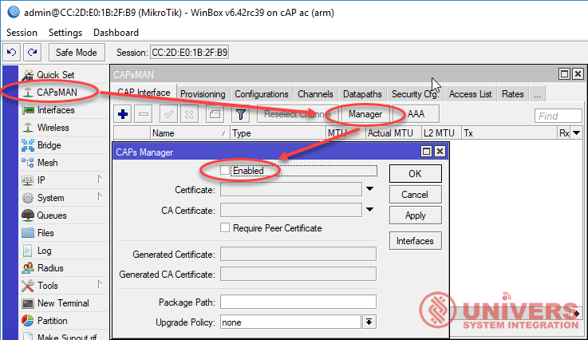
/caps-man manager print
# по умолчанию мы видим следующие настройки
enabled: no
certificate: none
ca-certificate: none
package-path:
upgrade-policy: none
require-peer-certificate: no
|
enabled (yes | no; Default:no) |
включаем или выключаем CAPsMAN |
|
certificate (auto | certificate name | none; Default:none) |
Device certificate |
|
ca-certificate (auto | certificate name | none; Default:none) |
Device CA certificate |
|
require-peer-certificate (yes | no; Default:no) |
все подключенным CAPs необходимо иметь актуальный сертификат |
|
package-path (string |; Default: ) |
устанавливает путь к папке где RouterOS packages. For example, use "/nova" to specify the Nova folder from the Files section. If nothing specified the CAPsMAN can provide the its built-in architecture RouterOS packages to CAP with the same architecture for upgrade. |
|
upgrade-policy (none | require-same-version | suggest-same-upgrade; Default:none) |
Опции политики обновлений (очень удобная функция обновляет RouterOS на всех точках в сети, но не обновит firmware)
|
# включаем службу
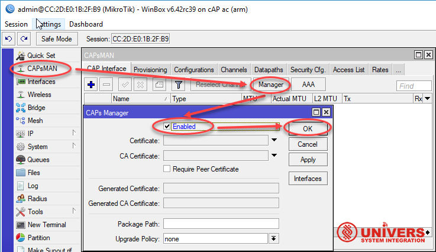
/caps-man manager set enabled=yes
Конфигурация перед Provisioning
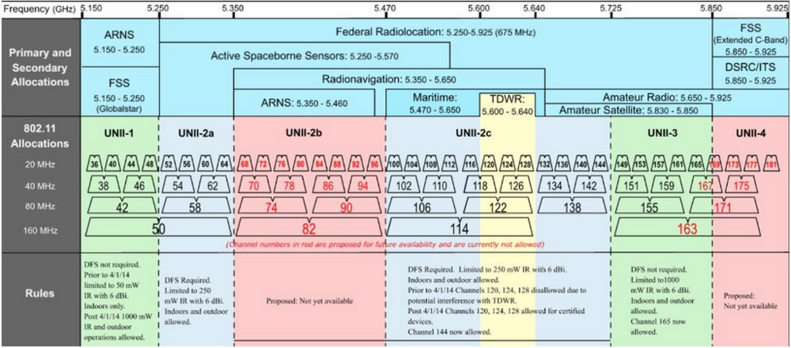
|
Ширина полосы |
Номера каналов |
Новые каналы |
|
20 MHz |
36, 40, 44, 48, 52, 56, 60, 64, 100, 104, 108, 112, 116, |
68, 72, 76, 80, 84, 88, 92, 96, 169, 173, 177, 181 |
|
40 MHz |
38, 46, 54, 62, 102, 110, 118, 126, 134, 142, 151, 159 |
70, 78, 86, 94, 167, 175 |
|
80 MHz |
42, 58, 106, 122, 138, 155 |
74, 90, 171 |
|
160 MHz |
50, 114 |
82, 163 |
Возможные скорости передачи данных при максимальной модуляции для устройств актуального стандарта 802.11ac Wave 2, учитываем что многие устройства поддерживают модуляцию 1024-QAM при 80 MHz, что выше спецификации 802.11 ac
|
Пространственных |
20 MHz |
40 MHz |
80 MHz |
80 MHz |
160 MHz |
160 MHz |
|
1 |
|
200 |
433.3 |
541 |
867 |
1084 |
|
2 |
|
400 |
866.7 |
1084 |
1733.3 |
2166 |
|
3 |
289 |
600 |
1300 |
1625 |
|
|
|
4 |
|
800 |
1733.3 |
2166 |
3466.7 |
4334 |
|
8 |
693 |
1600 |
3466.7 |
4334 |
6933.3 |
8668 |
866.6Mbps-80MHz/2S/SGI - максимум, что доступно в текущий момент на устройствах MikroTik CAP ac и WAP ac,
975Mbps-80MHz/2S/SGI - максимум для MikroTik hAP ac не будем рассматривать в силу его технологического возраста (слабый процессор QCA9558 720МГц 2013 года, QCA9880 MIMO 3x3)
в этом разделе мы выбираем значение: стандарта, ширины канала, название, расположение дополнительного канала, мощность на выходе с передатчика
Вариант с предустановленным extension-channel
/caps-man channel add band=2ghz-g/n control-channel-width=20mhz name="2.4G" extension-channel=Ce tx-power=16
/caps-man channel add band=5ghz-n/ac control-channel-width=20mhz name="5G" extension-channel=Ceee tx-power=16
Вариант из актуальной RouterOS где extension-channel выберет сам CAPsMAN
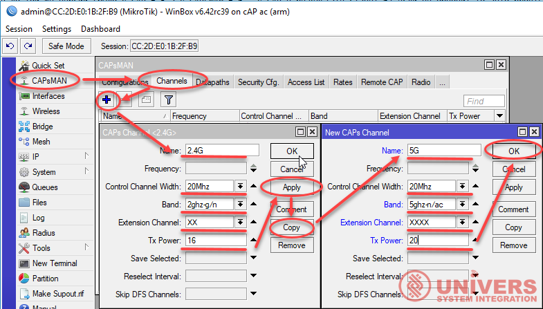
/caps-man channel add name="2.4G" control-channel-width=20mhz band=2ghz-g/n extension-channel=XX tx-power=16
/caps-man channel add name="5G" control-channel-width=20mhz band=5ghz-n/ac extension-channel=XXXX tx-power=20
# в данном примере значения задаются следующим образом: для hap ac lite - берем значение максимальной модуляции из тех характеристик для 2.4 GHz - MCS7 = 16dBm и 5 GHz - MCS9 = 16dBm и задаем значение как tx-power - мощность на выходе с передатчика, ниже на изображении схематически покаазано как влияет на текущую модуляцию уровень сигнала на клиентском устройстве
channel.band (2ghz-b | 2ghz-b/g | 2ghz-b/g/n | 2ghz-g/n | 2ghz-onlyg | 2ghz-onlyn | 5ghz-a | 5ghz-a/n | 5ghz-a/n/ac | 5ghz-n/ac | 5ghz-onlyac (с 6.42.39) | 5ghz-onlyn; Default: )
channel.extension-channel (Ce | Ceee | eC | eCee | eeCe | eeeC | disabled; Default: ) XX и XXXX доступны с RouterOS 6.39
channel.tx-power (integer [-30..40]; Default: ) - рекомендуем исходя из технических характеристик точки доступа
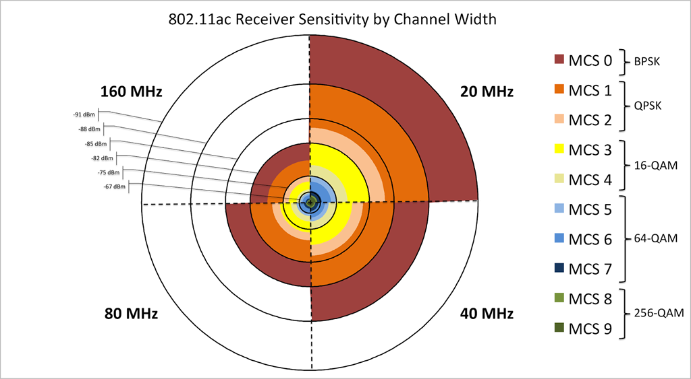
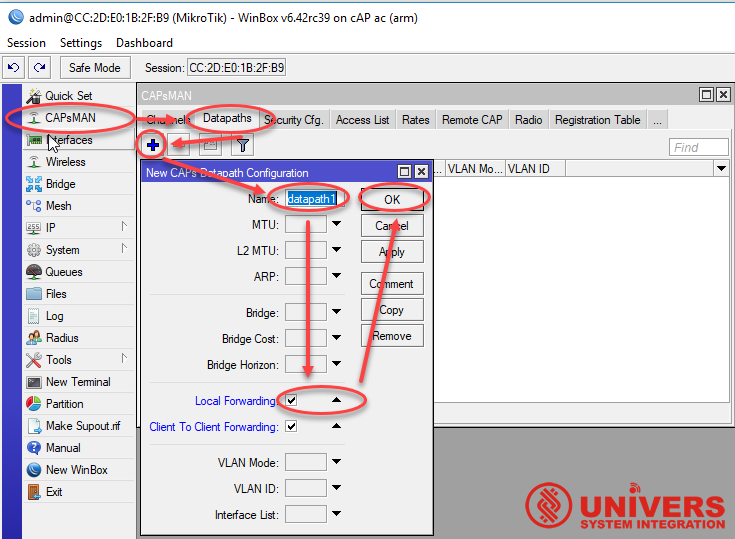
/caps-man datapath add name="datapath1" client-to-client-forwarding=no local-forwarding=yes
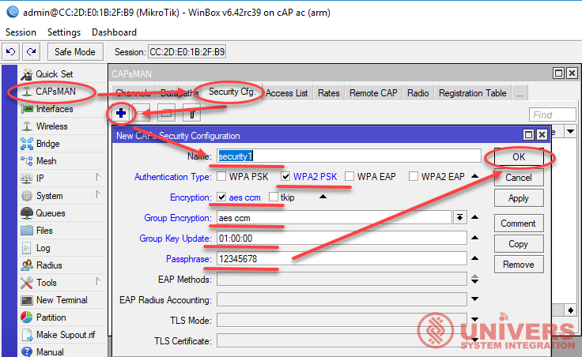
/caps-man security add name="security1" authentication-types=wpa2-psk encryption=aes-ccm group-encryption=aes-ccm group-key-update=1h passphrase="12345678"
Настройка Master Configuration Profiles
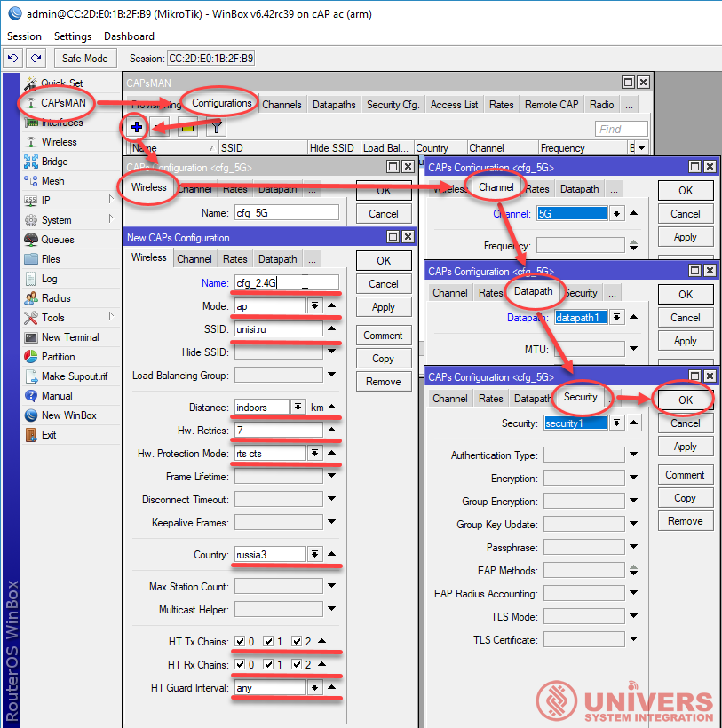
/caps-man configuration add name="cfg_5G" mode=ap ssid="unisi.ru" tx-chains=0,1,2 rx-chains=0,1,2 distance=indoors security=security1 datapath=datapath1 channel=5G
/caps-man configuration add name="cfg_2.4G" mode=ap ssid="unisi.ru" tx-chains=0,1,2 rx-chains=0,1,2 guard-interval=any distance=indoors hw-retries=7 hw-protection-mode=rts-cts security=security1 datapath=datapath1 channel=2.4G
|
channel (list; Default: ) |
User defined list taken from Channel names (/caps-man channels) |
|
channel.band (2ghz-b | 2ghz-b/g | 2ghz-b/g/n | 2ghz-g/n | 2ghz-onlyg | 2ghz-onlyn | 5ghz-a | 5ghz-a/n | 5ghz-a/n/ac | 5ghz-n/ac | 5ghz-onlyac (с 6.42.39) | 5ghz-onlyn; Default: ) |
Определить рабочий диапазон радиочастот и режим, взятый из аппаратной возможности беспроводной карты |
|
channel.extension-channel (Ce | Ceee | eC | eCee | eeCe | eeeC | XX (с 6.39) | XXXX (с 6.39) | disabled; Default: ) |
Конфигурация канала расширения. (Например, Ce = канал расширения выше канала управления, eC = канал расширения ниже канала управления) |
|
channel.frequency (integer [0..4294967295]; Default: ) |
Значение частоты канала в МГц, на котором будет работать AP. Если он оставлен пустым, CAPsMAN автоматически определит лучшую частоту, которая наименее занята. |
|
channel.tx-power (integer [-30..40]; Default: ) |
Set TX Power for Card (in Dbm) |
|
channel.width (; Default: ) |
Sets Channel Width in MHz. |
|
comment (string; Default: ) |
Short description of the Configuration profile |
|
country (name of the country | no_country_set; Default:no_country_set) |
Ограничение доступных диапазонов, частот и максимальной мощности передачи для каждой частоты. Также указывает значение по умолчанию для scan-list. Значение no_country_set - это набор каналов, совместимых с FCC. |
|
datapath (list; Default: ) |
User defined list taken from Datapath names (/caps-man datapath) |
|
datapath.bridge (list; Default: ) |
Bridge to which particular interface should be automatically added as port |
|
datapath.bridge-cost (integer [0..4294967295]; Default: ) |
bridge port cost to use when adding as bridge port |
|
datapath.bridge-horizon (integer [0..4294967295]; Default: ) |
bridge horizon to use when adding as bridge port |
|
datapath.client-to-client-forwarding (yes | no; Default:no) |
controls if client-to-client forwarding between wireless clients connected to interface should be allowed, in local forwarding mode this function is performed by CAP, otherwise it is performed by CAPsMAN |
|
datapath.local-forwarding (yes | no; Default:no) |
controls forwarding mode |
|
datapath.openflow-switch (; Default: ) |
OpenFlow switch port (when enabled) to add interface to |
|
datapath.vlan-id (integer [1..4095]; Default: ) |
VLAN ID to assign to interface if vlan-mode enables use of VLAN tagging |
|
datapath.vlan-mode (use-service-tag | use-tag; Default: ) |
Enables and specifies type of VLAN tag to be assigned to interface (causes all received data to get tagged with VLAN tag and allows interface to only send out data tagged with given tag) |
|
guard-interval (any | long; Default:any) |
Разрешить ли использование короткого защитного интервала (обратитесь к спецификации 802.11n MCS, чтобы узнать, как это может повлиять на пропускную способность). "any" будет использовать либо короткий ("short"), либо длинный ("long"), в зависимости от скорости передачи данных, "long" будет использовать только длинные. |
|
hide-ssid (yes | no; Default: ) |
.
Это свойство действует только в режиме AP. Установив его в yes, можно удалите эту сеть из списка беспроводных сетей, которые показаны некоторые клиентские программы. Изменение этого параметра не повышает безопасность беспроводной сети, поскольку SSID включен в другие фреймы, отправленные AP. |
|
load-balancing-group (string; Default: ) |
Интерфейс, принадлежащий группе баланса нагрузки, принимает новых клиентов только в том случае, если количество уже подключенных клиентов меньше, чем на остальных интерфейсах из одной группы. |
|
max-sta-count (integer [1..2007]; Default: ) |
Максимальное количество подключенных клиентов. |
|
mode (; Default:ap) |
Установите рабочий режим. На данный момент оддерживается только ap |
|
multicast-helper (default | disabled | full; Default:default) |
When set to full multicast packets will be sent with unicast destination MAC address, resolving "multicast problem" on wireless link. This option should be enabled only on access point, clients should be configured instation-bridge mode. Available starting from RouterOS 5.15.
|
|
name (string; Default: ) |
Descriptive name for the Configuration Profile |
|
rx-chains (list of integer [0..2]; Default:0) |
Какие антенны использовать для приема. |
|
security (string; Default:none) |
Name of security configuration from /caps-man security |
|
security.authentication-types (list of string; Default:none) |
Specify the type of Authentication from wpa-psk, wpa2-psk, wpa-eap or wpa2-eap |
|
security.eap-methods (eap-tls | passthrough; Default:none) |
.
|
|
security.encryption (aes-ccm | tkip; Default: ) |
Set type of unicast encryption algorithm used |
|
security.group-encryption (aes-ccm | tkip; Default: ) |
Set type of group encryption algorithm used |
|
security.passphrase (string; Default: ) |
WPA or WPA2 pre-shared key |
|
SSID (string (0..32 chars); Default: ) |
SSID (service set identifier) is a name broadcast in the beacons that identifies wireless network. |
|
tx-chains (list of integer [0..2]; Default:0) |
Which antennas to use for transmit. |
# country - в актуальных прошивках с RouterOS 6.40.3 данный параметр не актуален он имеет единственное доступное значение "russia3" ниже приведен частотный план
/interface wireless info country-info
country: russia3
ranges: 2402-2482/b,g,gn20,gn40(20dBm)
2417-2457/g-turbo(20dBm)
5170-5250/a,an20,an40,ac20,ac40,ac80,ac160,ac80+80(20dBm)/passive
5250-5330/a,an20,an40,ac20,ac40,ac80,ac160,ac80+80(20dBm)/dfs,passive
5650-5710/a,an20,an40,ac20,ac40,ac80,ac160,ac80+80(20dBm)/dfs,passive
5755-5815/a,an20,an40,ac20,ac40,ac80,ac160,ac80+80(20dBm)
5190-5310/a-turbo(20dBm)/dfs
5180-5300/a-turbo(20dBm)/dfs
|
CHANNEL |
FREQUENCY |
EUROPE |
|
36 |
5180 |
Indoors |
|
40 |
5200 |
Indoors |
|
44 |
5220 |
Indoors |
|
48 |
5240 |
Indoors |
|
52 |
5260 |
Indoors / DFS / TPC |
|
56 |
5280 |
Indoors / DFS / TPC |
|
60 |
5300 |
Indoors / DFS / TPC |
|
64 |
5320 |
Indoors / DFS / TPC |
|
100 |
5500 |
DFS / TPC |
|
104 |
5520 |
DFS / TPC |
|
108 |
5540 |
DFS / TPC |
|
112 |
5560 |
DFS / TPC |
|
116 |
5580 |
DFS / TPC |
|
120 |
5600 |
DFS / TPC |
|
124 |
5620 |
DFS / TPC |
|
128 |
5640 |
DFS / TPC |
|
132 |
5660 |
DFS / TPC |
|
136 |
5680 |
DFS / TPC |
|
140 |
5700 |
DFS / TPC |
|
149 |
5745 |
SRD |
|
153 |
5765 |
SRD |
|
157 |
5785 |
SRD |
|
161 |
5805 |
SRD |
|
165 |
5825 |
SRD |
DFS = Dynamic Frequency Selection;
TPC = Transmit Power Control;
SRD = Short Range Devices 25 mW max power.
не смотря на это добавленный в RouterOS 6.41 - !) wireless - new driver with initial support for 160 and 80+80 MHz channel width; - нам не доступен
и добавленный в RouterOS 6.42rc39 - *) winbox - added 160 MHz "channel-width" to wireless settings; - на данный момент тоже не доступен
# настройка поиска CAP по MAC адресу для этого указываем какие режимы для каких мастер конфигураций и соответственно задаем префикс для удобной идентификации
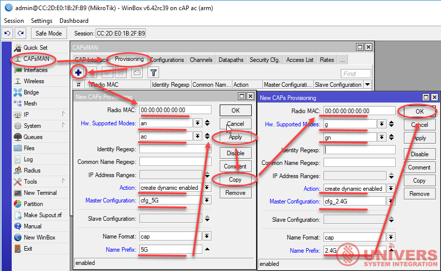
/caps-man provisioning add radio-mac=00:00:00:00:00:00 hw-supported-modes=an,ac identity-regexp="" common-name-regexp="" ip-address-ranges="" action=create-dynamic-enabled master-configuration=cfg_5G slave-configurations="" name-format=prefix-identity name-prefix="5G"
/caps-man provisioning add radio-mac=00:00:00:00:00:00 hw-supported-modes=g,gn identity-regexp="" common-name-regexp="" ip-address-ranges="" action=create-dynamic-enabled master-configuration=cfg_2.4G slave-configurations="" name-format=prefix-identity name-prefix="2.4G"
|
action (create-disabled | create-enabled | create-dynamic-enabled | none; Default:none) |
Действие, которое следует предпринять, если совпадения правил задаются с помощью следующих параметров:
|
|
comment (string; Default: ) |
Краткое описание правила Provisioning |
|
common-name-regexp (string; Default: ) |
Регулярное выражение для соответствия точек по общему имени |
|
hw-supported-modes (a | a-turbo | ac | an | b | g | g-turbo | gn; Default: ) |
Match radios by supported wireless modes |
|
identity-regexp (string; Default: ) |
Regular expression to match radios by router identity |
|
ip-address-ranges (IpAddressRange[,IpAddressRanges] max 100x; Default:"") |
Match CAPs with IPs within configured address range. |
|
master-configuration (string; Default: ) |
Если действие ( action ) указывает на создание интерфейсов, то будет создан новый мастер-интерфейс с его конфигурацией, настроенной на этот профиль конфигурации |
|
name-format (cap | identity | prefix | prefix-identity; Default:cap) |
указать синтаксис создания имени интерфейса CAP
|
|
name-prefix (string; Default: ) |
префикс имени, который можно использовать в формате имени для создания имен интерфейса CAP |
|
radio-mac (MAC address; Default:00:00:00:00:00:00) |
MAC address of radio to be matched, empty MAC (00:00:00:00:00:00) means match all MAC addresses |
|
slave-configurations (string; Default: ) |
Если действие ( action ) указывает на создание интерфейсов, то создается новый подчиненный интерфейс для каждого профиля конфигурации в этом списке. |
Бесшовный роуминг на CAPSMAN есть ли он или имитация с помощью Access List
Клиентское устройство является главным, когда дело доходит до роуминга, принимая почти все решения о том, когда и куда подключаться. Но AP может влиять на процесс роуминга с помощью приведенных ниже методов. Однако во всех случаях Клиент принимает окончательное решение о том, куда подключаться.
Client Association Limits - max-sta-count присутствует
802.11r - На данный момент реализация отсутствует
Band Steering (Технология распределения между диапазонами частот обеспечивает подключение клиентов к беспроводной сети на подходящем для них диапазоне частот. режим Предпочитать 5 ГГц; режим Предпочитать 2.4 ГГц;) отсутствует, но мы можем имитировать это следующим способом:
Airtime Fairness (Функция равного доступа к радиоэфиру, гарантирует, что все подключенные клиенты получат равный доступ к радиоэфиру независимо от скорости передачи данных для того или иного устройства.) отсутствуют
надеемся что специалисты MikroTik смогут реализовать это программно на базе устройств с Qualcomm Atheros IPQ4019 их производительность и потенциал достаточен для этого
Все что нам доступно на текущий момент это управление уровнем принимаемого сигнала через Access List на клиентском устройстве не путайте это с уровнем сигнала на CAP
Access List
Список доступа в CAPsMAN - это упорядоченный список правил, который используется для разрешения / запрещения клиентам подключения к любому CAP под управлением CAPsMAN. Когда клиент пытается подключиться к CAP, который контролируется CAPsMAN, CAP перенаправляет этот запрос в CAPsMAN. В рамках процесса регистрации CAPsMAN обращается к списку доступа, чтобы определить, разрешено ли клиенту подключаться. Поведение списка доступа по умолчанию - это разрешить соединение.
Правила списка доступа обрабатываются один за другим, пока не будет найдено правило соответствия. Затем выполняется действие в правиле сопоставления. Если действие указывает, что клиент должен быть принят, клиент принимается, потенциально переопределяя его параметры соединения по умолчанию с теми, которые указаны в правиле списка доступа.
Список доступа настроен в /caps-man access-list menu. Существуют следующие параметры для правил списка доступа:
# в настройках wireless если настраивать точку через CAPsMAN допустимы следующие параметры: числовое значение - 00:00:10 (можно задавать значение самостоятельно) и значение = always
/caps-man access-list add action=reject allow-signal-out-of-range=10s disabled=no interface=any mac-address=00:00:00:00:00:00 mac-address-mask=00:00:00:00:00:00 signal-range=-120..-70 ssid-regexp=""
Используя значения чувствительности из диагармы ниже, можно примерно регулировать скорость подключения которую клиент получит не позволяя ему подключаться к сети
# ниже пример для интерфейса wlan1 (диапазон 2.4) в настройках wireless если настраивать точку БЕЗ CAPsMAN, тут все намного проще можно даже контролировать уроваень сигнала для каждого диапазона (wlan1)
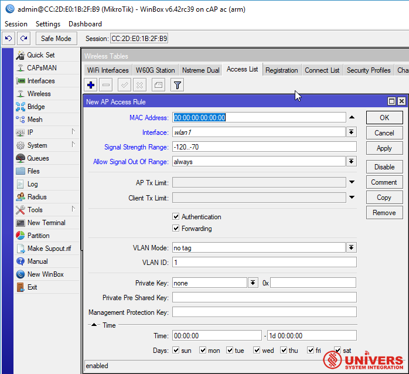
/interface wireless access-list add mac-address=00:00:00:00:00:00 interface=wlan1 signal-range=-120..-70 allow-signal-out-of-range=10s authentication=yes forwarding=yes ap-tx-limit=0 client-tx-limit=0 private-algo=none private-key="" private-pre-shared-key="" management-protection-key="" vlan-mode=default vlan-id=1
# в предыдущих RouterOS все реализовывалось следующим простейшим образом, всем устройствам с уровнем сигнала -70..120 можно подключаться соответственно с уровнем сигнала -120..-71 не подключишься
/caps-man access-list add action=accept disabled=no interface=all signal-range=-70..120
/caps-man access-list add action=reject disabled=no interface=all signal-range=-120..-71
/system-reset no-defaults=yes
# полностью стираем конфигурацию роутера включая конфигурацию по умолчанию
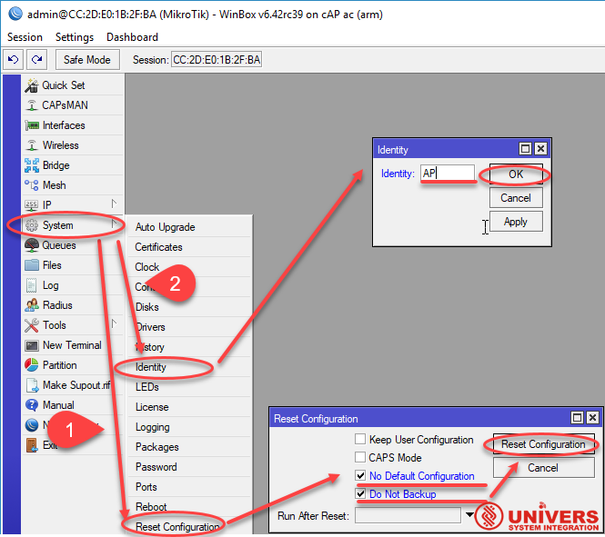
/system identity set name=AP
# задаем название точки
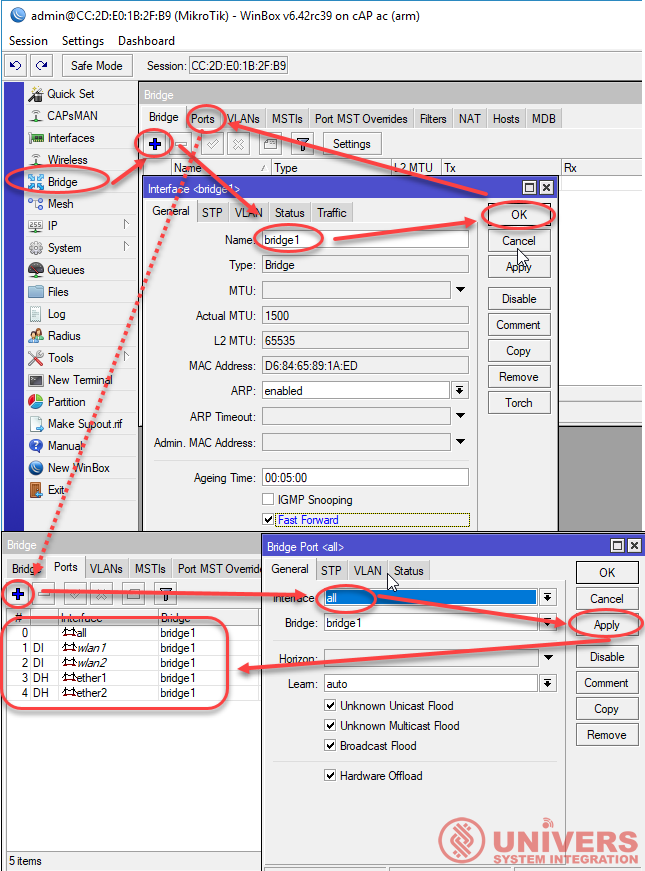
/interface bridge add fast-forward=no name=bridge1
/interface bridge port add bridge=bridge1 interface=all
# учитывая изменения настроек bridge в RouterOS v6.40rc36-rc40 and v6.41rc1+ hardware offloading (hw-offload) добавим все доступные интерфейсы, protocol-mode автоматически будет rstp
|
protocol-mode (none | rstp | stp | mstp; Default: rstp) |
Select Spanning tree protocol (STP) or Rapid spanning tree protocol (RSTP) to ensure a loop-free topology for any bridged LAN. RSTP provides for faster spanning tree convergence after a topology change. Select MSTP to ensure loop-free topology across multiple VLANs. |
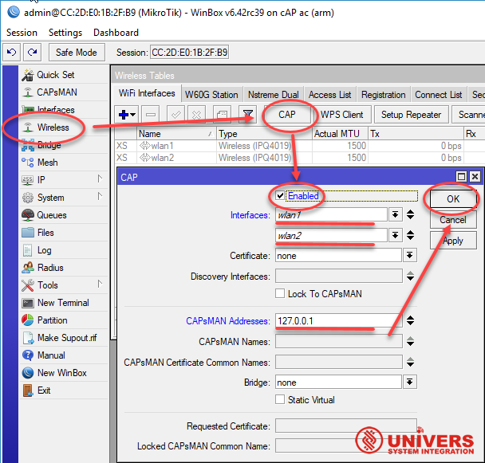
/interface wireless cap set caps-man-addresses=127.0.0.1 enabled=yes interfaces=wlan1,wlan2
# модель роутера может быть любой обычно wlan1=2.4G, а wlan2=5G вариант когда точка и контроллер — это одно устройство "CAP = CAPsMAN"
не забываем про вкладку firewall, дадим возможность ходить пакетам от локального CAP к CAPsMAN:
/ip firewall filter add action=accept chain=input comment="CAP to CAPsMAN" dst-port=5246,5247 protocol=udp src-address=127.0.0.1
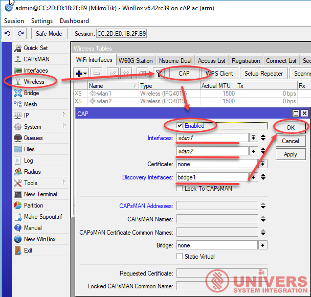
/interface wireless cap set enabled=yes interfaces=wlan1,wlan2 discovery-interface=bridge1
# вариант когда точка и контроллер — это разные устройства CAP ≠ CAPsMAN
/ip dhcp-client add interface=bridge1 use-peer-dns=yes add-default-route=yes disabled=no
# добавим dhcp-client на bridge он получит IP address, так как все удобства управления через VPN по MAC-адресу через winbox не доступны
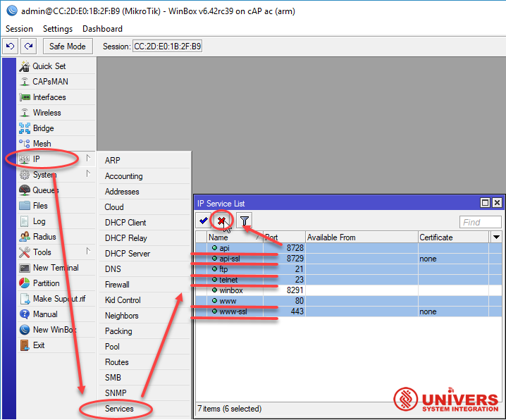
/ip service
set api disabled=yes
set api-ssl disabled=yes
set ftp disabled=yes
set telnet disabled=yes
set ssh disabled=yes
set www disabled=yes
set www-ssl disabled=yes
# отключим все не нужные сервисы кроме winbox, ssh - в последней версии RouterOS отсутствует
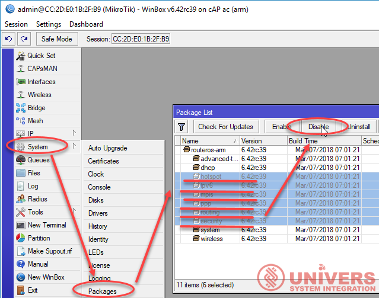
/system package disable hotspot
/system package disable ipv6
/system package disable mpls
/system package disable ppp
/system package disable routing
/system package disable security
# отключим все не нужные пакеты в RouterOS после первой перезагрузки они будут помечены серым
Результаты применения настроек в CAPsMAN (CAP = CAPsMAN)
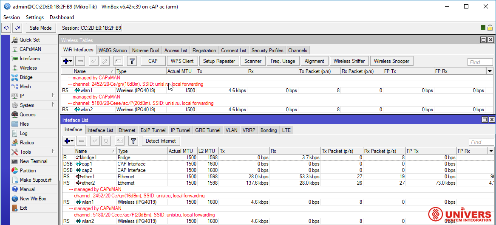
В данном примере CAPsMAN и CAP на одном устройстве, видим точки и их интерфейсы получившие настройки
[admin@MikroTik] /caps-man interface pr
Flags: M - master, D - dynamic, B - bound, X - disabled, I - inactive, R - running
# NAME RADIO-MAC MASTER-INTERFACE
0 MDBR ;;; radio locked to country 'russia3'
5G-MikroTik-1 00:00:00:00:00:BB none
1 M B ;;; radio locked to country 'russia3'
2.4G-MikroTik-1 00:00:00:00:00:BA none
MDBR - master dynamic bound running - для активного динамического интерфейса
M B - master bound - для выключенного в CAPsMAN интерфейса
Конфигурация CAPsMAN с сертификатами
Вариант работы с использованием сертификатов в CAPsMAN для использования параметров как Require Peer Certificate и Lock To Caps Man. Эти параметры повышают безопасность и, в некоторых случаях, стабильность вашей сети CAPsMAN. CAP не будут подключаться к CAPsMAN без специального сертификата и наоборот.
Это базовая конфигурация для использования сертификатов в настройке CAPsMAN. В этом примере предполагается, что у вас уже есть базовая конфигурация на CAPsMAN и CAP. Лучше использовать эту конфигурацию в сетях CAPsMAN, которые не постоянно растут.
Создадим сертификат В меню «Менеджер CAPsMAN» установите «Сертификат» и «Сертификат CA» в положение auto:
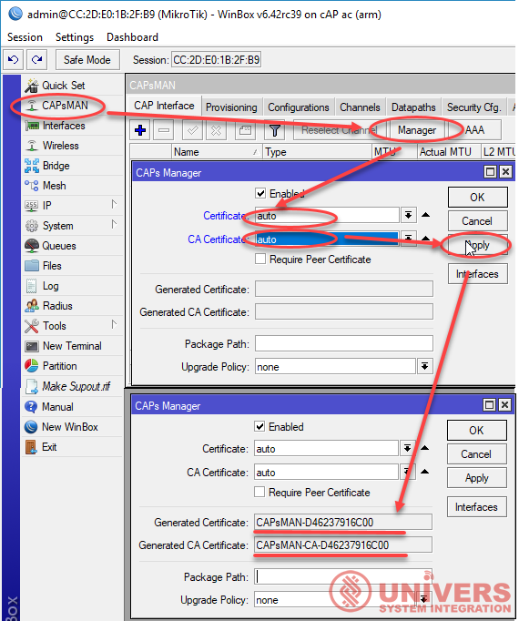
/caps-man manager set ca-certificate=auto certificate=auto
# проверим результат изготовления сертификатов
[admin@MikroTik] > /caps-man manager print
enabled: yes
certificate: auto
ca-certificate: auto
package-path:
upgrade-policy: none
require-peer-certificate: no
generated-certificate: CAPsMAN-D46237916C00
generated-ca-certificate: CAPsMAN-CA-D46237916C00
Сначала устройство CAPsMAN будет генерировать CA-Certificate, а затем будет генерировать сертификат, который зависит от CA-Certificate.
#Зададим в конфигурации CAP запрос сертификата:
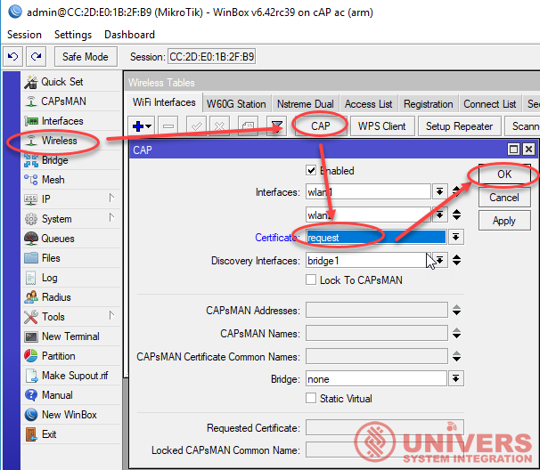
/interface wireless cap set certificate=request
CAP будет подключаться к CAPsMAN и запрашивать сертификат. CAP получит форму CA-Certificate CAPsMAN, а другой сертификат будет создан для использования в CAP.
На устройстве CAP в меню CAP установлен требуемый сертификат:
/interface wireless cap> /interface wireless cap print
enabled: yes
interfaces: wlan1,wlan2
certificate: request
lock-to-caps-man: no
discovery-interfaces: bridge1
caps-man-addresses:
caps-man-names:
caps-man-certificate-common-names:
bridge: none
static-virtual: no
requested-certificate: CAP-D46237916C00
Если вы хотите разрешить только CAP с действительным сертификатом для подключения к этому CAPsMAN, вы можете установить Require Peer Certificate на yes на устройстве CAPsMAN:
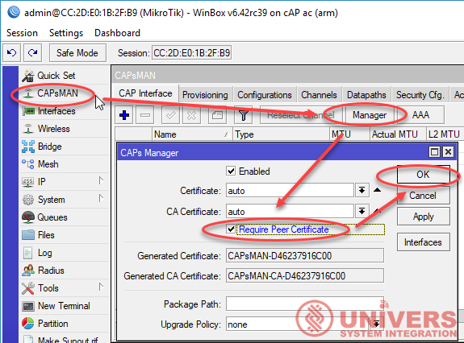
/caps-man manager set require-peer-certificate=yes
Однако, когда вы захотите добавить новые CAP-устройства в свою сеть CAPsMAN, вам придется установить этот параметр равным нулю, а затем вернуться к дам после получения сертификатами CAP. Каждый раз, когда вы меняете этот параметр, CAPsMAN удаляет все динамические интерфейсы, и CAP попытаются снова подключиться.
Если вы хотите заблокировать CAP для определенного CAPsMAN и убедитесь, что он не будет подключаться к другим CAPsMANs, вы должны установить опцию Lock To CAPsMAN на yes. Кроме того, вы можете указать CAPsMAN для блокировки, установив общие имена сертификатов CAPsMAN на устройстве CAP:
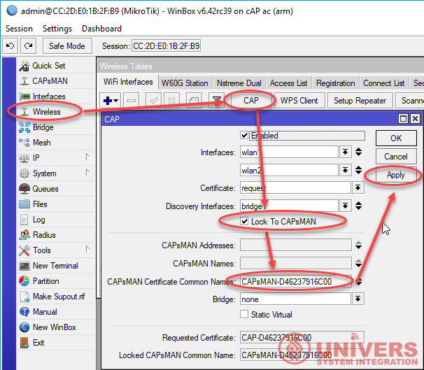
/interface wireless cap
set lock-to-caps-man=yes
set caps-man-certificate-common-names=CAPsMAN-D46237916C00
CAPsMAN состояние подключенных CAPs с сертификатами
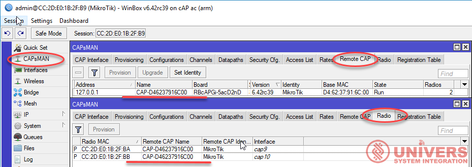